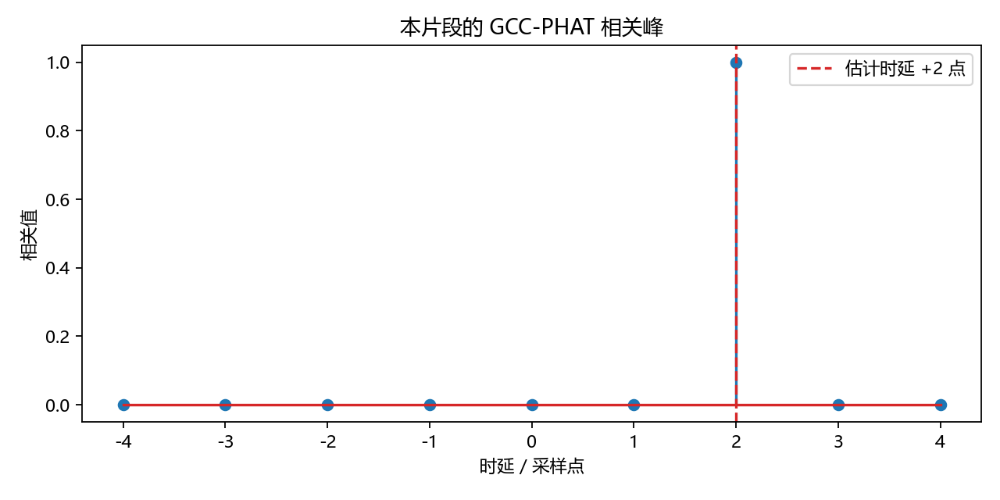
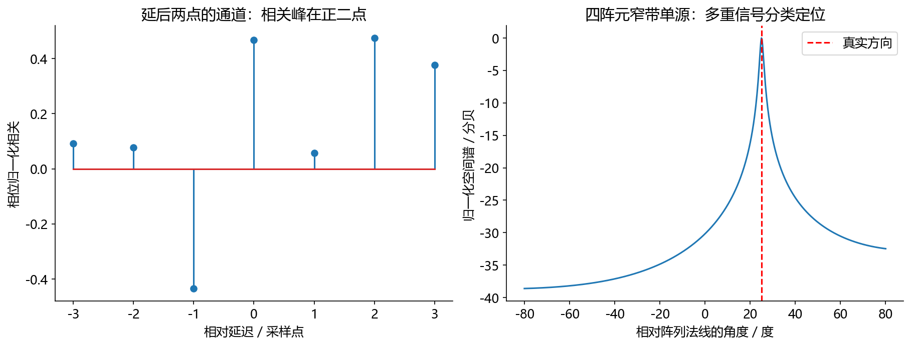

看图理解 · 跟着推演 · 对照真实结果
第10课 · 两只麦克风怎样听出时间差
先建立直觉，再逐节讲原理、代码与结果；章节目录可定位学习。从两点延迟的实际相关峰出发，串起方向估计、延迟求和、MVDR和MUSIC。
从直觉、原理，到代码与结果
本版保留导览小实验，增加教材逐节精讲、代码分段阅读和结果解释。三个项目另有本次真实模型短推理，第 12 课增加实际训练曲线。按右侧小节分次学习即可，不必一次看完。
完整文字、规范公式和注释代码仍在上方“读完整图文”。视频中的历史报告、教学算例与本次实测分别标明，短演示不冒充完整重训或设备验收。
先修：采样、复数频谱、内积与基本滤波
- 约定时延正负与角度坐标
- 运行两麦时延估计
- 解释阵列方法的假设和边界
本课覆盖清单与证据范围
- 学习阶梯
- 1. 生活直觉：人能听出左右，机器需要明确坐标
- 2. 第一阶：相关就是拿一段波形左右移动去找最像的位置
- 3. 第二阶：延迟求和，先让同一件事同时发生
- 4. 用图把“估时间”与“估方向”分开
- 5. 第三阶：MVDR，在保住目标响应的约束下压低噪声
- 6. 第四阶：MUSIC，为什么“噪声空间”还能告诉我们声源在哪
- 7. 阵列工程里最常见的错误
- 8. 练习与实习作业
结果从哪里来
- 导览中的小算例实际执行
- 原教材逐节讲解；正文代码/公式/图保留
只运行宽带随机信号的两麦GCC-PHAT教学实验；MVDR与MUSIC为机制讲解，未声称本视频完成真实阵列定位或水声验证。
新版视频时间轴已改变，单独记录续播位置；学习计划的完成勾选保持不变。
跟着运行：注释代码、实际输出与结果图
下面代码在生成本站时实际执行。这里只是教学小实验，不是完整模型训练或业务设备测评。
import numpy as np
rng = np.random.default_rng(10)
earlier = rng.normal(size=2048)
# 第二路晚两点，用补零避免环绕到开头
later = np.r_[np.zeros(2), earlier[:-2]]
N = 4096 # 足够长的FFT用于避免相关混叠
cross = np.fft.rfft(later, N)*np.conj(np.fft.rfft(earlier, N))
cross /= np.maximum(abs(cross), 1e-12) # PHAT只保留相位关系
corr = np.fft.irfft(cross, N)
lags = np.arange(-4, 5)
values = corr[lags % N] # 负时延在FFT结果尾部
delay = int(lags[np.argmax(values)])
angle = np.degrees(np.arcsin(delay*343/(16000*0.08)))
print('第二路时延/点:', delay)
print('法线角度/度:', round(angle, 3))
print('最大时差/点:', round(0.08/343*16000, 3))
本次实际输出
第二路时延/点: 2 法线角度/度: 32.408 最大时差/点: 3.732

精讲中的代码、运行步骤与大图
代码片段用于逐行理解；真实运行结果仅限明确标注“本次实际”的部分。教材历史图保留原有实验范围。
代码精读 03 · 第1–18行
源码精读 / 教学片段，需配套环境与上下文，不等同于独立脚本。
import sys
import numpy as np
sys.path.insert(0, "code")
from audio_core import gcc_phat
rng = np.random.default_rng(10)
earlier = rng.normal(size=2048)
# 第二路晚两点：补零移位，不用 np.roll 产生环绕声。
later = np.r_[np.zeros(2), earlier[:-2]]
delay, lags, values = gcc_phat(later, earlier, max_lag=4)
print("估计延迟（点）：", delay)
assert delay == 2
# 交换顺序应反号，这是最值得先写的单元测试。
reverse, _, _ = gcc_phat(earlier, later, max_lag=4)
assert reverse == -2
# 本次实际相关曲线：横轴是采样点，不是角度。
from pathlib import Path代码精读 03 · 第19–33行
源码精读 / 教学片段，需配套环境与上下文，不等同于独立脚本。
import matplotlib
matplotlib.use("Agg")
import matplotlib.pyplot as plt
plt.rcParams.update({"font.family": "Microsoft YaHei", "axes.unicode_minus": False})
fig, ax = plt.subplots(figsize=(8, 4))
ax.stem(lags, values)
ax.axvline(delay, color="tab:red", ls="--", label="估计时延 +2 点")
ax.set(title="本片段的 GCC-PHAT 相关峰", xlabel="时延 / 采样点", ylabel="相关值")
ax.legend()
fig.tight_layout()
out = Path("tutorial/figures/ch10_gcc_peak.png")
out.parent.mkdir(parents=True, exist_ok=True)
fig.savefig(out, dpi=160)
plt.close(fig)
print("已保存运行图：", out.as_posix())结果读图 03 · 2. 第一阶：相关就是拿一段波形左右移动
原教材运行记录

原教材已存图 不是本次新测 先确认实验范围 再解释坐标与单位
代码精读 04 · 第1–16行
源码精读 / 教学片段，需配套环境与上下文，不等同于独立脚本。
import numpy as np
rng = np.random.default_rng(11)
s = rng.normal(size=10000)
v1, v2 = rng.normal(size=(2, 10000))
x1 = s + v1
# 第二路的目标晚两点，噪声是独立生成的。
x2 = np.r_[np.zeros(2), s[:-2]] + v2
# 离线裁剪到共同有效区间；不评价被裁掉的边界。
target = s[:-2]
beam = (x1[:-2] + x2[2:]) / 2
noise_single = x1[:-2]-target
noise_beam = beam-target
gain_db = 10*np.log10(np.mean(noise_single**2)/np.mean(noise_beam**2))
print("独立噪声下的实验改善 dB：", gain_db)
assert 2.5 < gain_db < 3.5结果读图 05 · 4. 用图把“估时间”与“估方向”分开
原教材运行记录

原教材已存图 不是本次新测 先确认实验范围 再解释坐标与单位
代码精读 06 · 第1–12行
源码精读 / 教学片段，需配套环境与上下文，不等同于独立脚本。
import sys
import numpy as np
sys.path.insert(0, "code")
from audio_core import mvdr
# 玩具例子：已知真实噪声协方差，目标在两路没有相位差。
noise_cov = np.diag([1., 4.]).astype(complex)
steering = np.ones(2, dtype=complex)
w = mvdr(noise_cov, steering, loading=0)
print("权重：", w.real, "目标响应：", np.vdot(w, steering))
assert np.allclose(w, [0.8, 0.2])
assert np.isclose(np.vdot(w, steering), 1)闭卷自测：第二路晚2点，交换GCC-PHAT的输入顺序后，应得到什么时延？
应得到−2点。角度符号也依赖对应的通道顺序和坐标约定，不能只改数值不改说明。
逐字讲稿 · 可定位回看
两个人合唱同一句，节拍对齐时更整齐；差一拍时直接叠起来会糊。麦克风收到同一声音也可能有时间差，不能不检查就直接平均。
用两个短数组代替一次声响：左路 [0,1,0,0]，右路 [0,0,1,0]。右路比左路晚一个采样。 直接平均得到 [0,0.5,0.5,0]，原来的一次峰被分到了两个时刻。
若把早到的左路延迟一个采样，成为 [0,0,1,0]，再平均就得到 [0,0,1,0]。我们对齐了目标，但也增加了等待。 对齐不能自动消除所有噪声。若干扰与目标来自同一方向，或反射很强，空间信息就可能不够区分它们。
把两只麦克风相隔八厘米放在桌面上。声音从斜侧方来，通常先到一只，再到另一只。机器可以利用这点时间差，但前提是两个通道同步，不能把设备缓存差误当成传播差。
今天把第二路到达时间减第一路作为时差。第二路更晚就是正数。角度从阵列法线方向量起，正前方为零度；正角度选在让第二路更晚的一侧。先约定这些，公式才有确定意义。
两只麦克风不等于立刻知道完整三维位置。不同方向可能具有相同时间差，反射也可能比直达声更强。我们先解决一个可核验的两点延迟问题，再讨论更复杂的方法。
远场平面波近似下，时差等于麦克风间距乘角度正弦，再除以声速。间距是米，声速是米每秒，所以结果是秒；再乘采样率，才得到相差多少个采样。
当正弦绝对值最大为一，八厘米除以三百四十三，再乘一万六千，约为三点七三。若程序报告两百点，先怀疑同步或实现，而不是直接宣布声源来自某个特殊角度。
从阵列轴线量角时，公式会写成余弦，这不是另一个物理定律。面试里常见错误就是拿别人定义的角度代入自己的公式。图、符号、通道顺序必须一起说明。
想象把两条相同图案叠在透明纸上，其中一张向右移了两格。你左右滑动它，最能重合的位置就是延迟。互相关把这种逐位置比较写成乘积与求和。
如果信号只有一个稳定正弦，移动一个周期后又很相似，就会出现多个候选峰。宽带随机探针比较容易验证延迟，因此今天用它做单元测试，不把它叫作真实语音定位数据。
图上的峰值不是百分之多少的置信概率。它的数值受归一化、有限长度和窗口影响。先验证最大峰的位置与符号，再检查假峰和噪声条件，不要只展示一根很高的线。
频域里先用第二路频谱乘第一路频谱的复共轭，得到互谱。我们固定这个顺序，使第二路晚到时峰落在正时延。如果交换输入顺序，延迟符号也应该反过来。
PHAT 再除以互谱幅度，弱化某些强频带对结果的独占。可以把它理解成更重视跨频率的相位关系，而不是仅让能量最大的频带投票。很弱频点仍需数值保护。
归一化不是魔法。强混响、低信噪比、窄带输入或者通道不同步仍会导致错误峰。它适合先作为可解释基线，再与真实数据上的失败情况一起分析。
前五行先生成第一路，再在第二路前面补两个零，后面取第一路除最后两点以外的内容。这样第二路确实晚两点，而且两路长度一致。这里没有把结尾环绕到开头。
使用四千零九十六点 FFT，足够覆盖两条有限序列的线性相关长度。互谱归一化后反变换。负时延存放在结果尾部，所以代码用取模索引把负四到正四提取成直观顺序。
最后找到相关值最大的索引，转换成采样时延。角度换算只在结果符合物理范围时才有意义。本例真值为两点，反正弦输入合法，得到相对于我们定义的法线约三十二点四度。
先在横轴找到零，最大峰位于右侧加二。它说明第二路相对于第一路晚两个采样，与你构造输入的方式一致。旁边较小的数值来自有限长度和归一化，不要求全部严格等于零。
两点除以一万六千是零点一二五毫秒。再乘声速除以麦距，得到角度正弦约零点五三六，反正弦约三十二点四度。先得到时间，再利用几何转换，别把两步混成一个黑箱。
搜索范围放到正负四是整数格上的方便选择，但真实上限仍只有三点七三。若峰在四，不能偷偷把反正弦输入截成一再宣布九十度，应检查量化、同步、反射和估计误差。
当第二路晚两点，直接相加会把目标的不同位置混在一起，某些频率反而相消。延迟求和先让同一个目标采样对齐，再给两路相同权重。关键是对齐，不只是最后除以二。
若对齐后两路噪声独立且功率相同，平均使噪声功率减半，目标保持，因此理想信噪比改善约三分贝。若噪声也相干，或方向估错，这个简单收益就不一定成立。
离线可以把晚到的一路往前移并裁掉边界；实时不能读取未来，只能让早到的一路等一会儿。真实时差经常不是整数，还需要分数延迟或频域相位补偿，不能总靠四舍五入。
如果目标已对齐，而第二路噪声功率是第一路的四倍，平均并不聪明。MVDR 在目标响应保持一的约束下，选择让输出噪声功率最小的权重，用到噪声各通道怎样共同变化的信息。
在两路噪声不相关、功率一和四的例子里，权重是零点八和零点二。目标权重之和为一，噪声功率为零点六四加零点一六，等于零点八，比等权的一点二五更低。
一般情况下权重是复数，不一定都在零到一。实际应解线性方程并做稳定化，不盲目显式求逆。更难的是估准方向和噪声统计；把目标误算进噪声，也可能伤害目标。
同一个窄带声源在各麦克风上呈现特定相位模式。收集许多快拍形成协方差，再做特征分解，可以区分主要共同变化的方向和其余方向，也就是信号与噪声子空间。
在理想模型里，正确方向的导向向量接近与噪声子空间正交。扫描不同角度，投影能量越小，取倒数形成的方向谱越高。这解释了为什么噪声子空间反而能帮助找声源。
最简单版本要求声源数、几何和窄带模型适当，噪声近似空间白。强反射、少快拍和宽带语音都要额外处理。网格画得更密只代表搜索更细，不会凭空增加数据中的方向信息。
暂停回答：把两路输入交换，刚才加二点应该变成什么？答案是负二点。这个测试虽然简单，却能抓住大量通道顺序和共轭方向的错误，值得写成长期保留的自动测试。
接着把麦距改大，检查物理时差范围与空间混叠风险。常见全视场窄带设计希望阵距不超过半波长，但真实宽带处理还要考虑频带选择，不能只背一个距离阈值。
水声与空气都用相关、协方差和阵列思想，但声速、频率、距离和噪声模型需要重建。今天交付一张相关峰图、一条反号测试和一张参数表，先把能够核验的第一阶完成。
两只麦克风间距八厘米、空气声速取每秒三百四十三米时，路径差最多八厘米，所以时间差绝对值最多约零点二三三毫秒。一万六千赫兹下只约三点七个样点。
角度公式用正弦还是余弦，取决于你把零度放在阵列轴上还是法线方向。先画几何图，并说明正时延表示哪只麦克风先到，不能直接复制一个公式后猜正负。
小阵列的整数延迟网格比较粗，需要插值或其他亚采样估计，同时考虑噪声和混响。相关峰很高也可能是反射路径，不能把每次最大峰都当成真实直达声。
MVDR可以理解为：在目标方向增益满足约束的前提下，让输出噪声功率尽量小。它不是简单把所有麦克风平均，更不是总能量最小就一定好。
权重依赖目标导向向量和噪声空间统计。噪声协方差若用混入很多目标语音的帧估计，模型可能把目标也当噪声压制。矩阵病态时通常需要稳定化处理。
水声背景能帮助你理解阵列几何和传播，但空气与水中的声速、阵列尺度和噪声条件不同。迁移时先重算单位与延迟范围，再验证算法，不直接套旧参数。
本章不要四个算法一起背。第一阶：两路声音到达时间不同，能估时延。第二阶：把目标对齐再相加，能做延迟求和。第三阶：利用噪声统计分配权重，
理解 MVDR。第四阶：从阵列协方差里分出信号与噪声子空间，理解 MUSIC。先修为采样、复数频谱、向量内积；协方差和特征分解不熟也可先完成前两阶。
建议分四次各 60—90 分钟。每次必须留下一个可检验结果：时延正负、对齐前后波形、约束误差、方向峰。对你而言，这一章尤其适合连接水声背景，但同一个算法名不代表空气和水下参数能够直接照搬。
声音从左边来，可能先到左耳、再到右耳。两个麦克风也能利用到达时间差。不过人耳还利用声级差和耳廓频率响应，机器的两麦时差模型只是其中一部分；前后歧义、反射和多个说话人都可能让简单模型不够。
本课把两个麦克风放在一条线上，间距为 d；角度 theta 从阵列法线方向量起，正前方是零度。在远场平面波近似下，时差为：
若从阵列轴线量角，公式会改成余弦形式。两个公式不冲突，坐标定义不同而已。
还要把正负号写清：本课定义 tau=t下标2-t下标1，也就是“第二路到达时间减第一路”；角度的正方向选为让第二路更晚到的一侧。只有连同通道顺序和这个约定，正时差才对应下面的正角度。两麦线阵本身也不能消除前后方向的几何歧义。
量：d。意义：两传感器间距。单位：米。
量：c。意义：声速。单位：米/秒，空气演示取 343。
量：tau。意义：到达时间差。单位：秒，可正可负。
量：k=tau f下标s。意义：相差的采样数。单位：点，可为非整数。
量：theta。意义：入射角。单位：公式三角函数内部注意弧度/角度。
量： X。意义：多通道频域快拍。单位：常见形状 [通道,快拍]。
手算：d=0.08 m，f下标s=16000 Hz，最大时差是 （d）除以（c）约等于0.000233 s，约 3.73 点。
如果某算法在这组几何下报告 200 点时差，先查同步、回声和实现，而不是直接把它转换成一个角度。若第二路比第一路晚 2 点：
两路录到相同目标但有延迟时，移动其中一路，找到最能重合的位置，就能估时差。普通互相关还会受某些频带能量过强影响。GCC-PHAT 先计算互谱，再除以互谱幅值，强调跨频率相位关系。
本课使用 FFT(later) × conj(FFT(earlier))，所以第二路晚到时应得到正延迟。conj 是复共轭；如果两个输入顺序交换，延迟符号也应交换。PHAT 不是“保证找出直达声”的魔法：强反射、窄带周期信号和低信噪比都可能制造错误峰。
这幅图直接来自上面的随机种子与两点延迟。先找到零点，再确认峰在右侧 +2，而不是仅看峰“很高”。峰外不一定严格为零；有限长度、补零边界和频域归一化都会影响数值。
本轮实际运行得到 +2 点，交换输入后 −2 点，两个断言均通过。先把这种符号测试固定下来，再把输入替换为真实多通道录音。
max_lag=4 按几何允许范围取整数上界。频谱长度需要足够，避免把线性相关误做成循环相关。噪声信号在这里是容易验证时延的宽带探针，不是最终语音定位评测集。
注意搜索到 ±4 点这个整数格，不代表物理时差上限从 3.73 点变成了 4 点。若把 4 点直接代入反正弦，会得到大于一的输入。应检查量化误差、同步和错误峰，必要时估计分数时延并带着误差范围报告角度；不能悄悄截成 ±90°，再称其为精确定位。
这几行依次得到rng。它们对应“2. 第一阶：相关就是拿一段波形左右移动去找最像的位置”中的中间量。逐行代入本节小例子的数值，确认每次赋值改变的量；代码片段承接前一段变量，不应脱离上下文单独运行。
先看中文注释：第二路晚两点：补零移位，不用 np.roll 产生环绕声。。零数组用于初始化缓冲或状态。流式处理时只在会话开始清零，不应在每个新音频块到来时重置历史。 断言把预期写成可失败的检查。通过只说明这一条件成立，不自动代表声音质量或全部场景合格。
先看中文注释：交换顺序应反号，这是最值得先写的单元测试。；本次实际相关曲线：横轴是采样点，不是角度。。断言把预期写成可失败的检查。通过只说明这一条件成立，不自动代表声音质量或全部场景合格。
绘图展示的是传入数组。核对横轴单位、图例与统一尺度后，才可以比较不同处理的变化。
这几行依次得到out。它们对应“2. 第一阶：相关就是拿一段波形左右移动去找最像的位置”中的中间量。逐行代入本节小例子的数值，确认每次赋值改变的量；代码片段承接前一段变量，不应脱离上下文单独运行。
打印是观测点。把这里的真实值与理论预期比较，若不一致应保留输出排错，而不是手工改成期望数字。 绘图展示的是传入数组。核对横轴单位、图例与统一尺度后，才可以比较不同处理的变化。
先看这张随教材保存的图。该短代码实际运行的 GCC-PHAT 曲线，最大峰位于 +2 个采样。。本次视频引用既有结果，不把它称为新运行。
横轴、纵轴、图例和单位决定图在回答什么问题。若曲线重合，先问它验证的是数值等价、形状还是算法质量。图像相似不自动证明真实业务效果相同。
把图中观察与本节假设联系起来，再回到前面的代码确认数组来源。合成信号实验、历史报告和真实模型输出属于不同证据范围，不能混成同一个成绩。
假设第一路是 x下标1[n]=s[n]+v下标1[n]，第二路晚两点，x下标2[n]=s[n-2]+v下标2[n]。离线可把第二路向前对齐，然后平均。目标相干相加；若两路噪声独立、同功率，平均后噪声功率约减半，理论 SNR 改善约 3.01 dB。
这个数字条件很多：同方向干扰、相关噪声、通道失配和错误时延都可能让改善变少。实时系统无法凭空取得未来样本，可以把早到那路延迟两点，付出额外等待，而不是假装没有延迟。
本轮实际测得改善约 2.963 dB，与独立同功率噪声下约 3.01 dB 的理论预期接近。有限样本不会精确等于理论值；若想测试“相关噪声不再减半”，应让两路噪声在完成目标对齐之后仍相同，而不是仅把移位前的两个噪声数组设成相同。不同的时间索引会改变它们的相关性。 核心不在 /2，而在 x1[:-2] 与 x2[2:] 对齐了相同目标采样。若不对齐，目标本身也会相消，尤其在某些频率上出现梳状频响。真实的 tau f下标s 常不是整数，需要分数延迟滤波或频域相位补偿；截断成整数会产生方向与频率相关误差。
这几行依次得到rng、s、x1。它们对应“3. 第二阶：延迟求和，先让同一件事同时发生”中的中间量。逐行代入本节小例子的数值，确认每次赋值改变的量；代码片段承接前一段变量，不应脱离上下文单独运行。
先看中文注释：第二路的目标晚两点，噪声是独立生成的。；离线裁剪到共同有效区间；不评价被裁掉的边界。。零数组用于初始化缓冲或状态。流式处理时只在会话开始清零，不应在每个新音频块到来时重置历史。
对数压缩动态范围。先确认输入非负并加小正数防止对零取对数；振幅比与功率比的分贝系数不同。 mean沿指定轴求平均。保留时间轴还是声源轴，会改变统计对象，所以必须核对axis或dim。 断言把预期写成可失败的检查。通过只说明这一条件成立，不自动代表声音质量或全部场景合格。
该图来自已运行的 code/run_experiments.py，结果记录在 results/dsp_results.json，不是上面每一片段的共同运行截图。左图峰值为 +2 点，与本课符号约定一致；横轴是点，不能直接读成角度。右图是另一组窄带四阵元仿真，真值和估计都是 25°；
它与左图“两点对应 32.4°”并不矛盾，因为两图的实验设定不同。
右图峰高不等于“置信概率 99%”。MUSIC 谱是由子空间投影形成的分数，未经概率校准。还要看主峰外是否有强假峰、网格分辨率多细，以及多个随机条件下是否稳定，不能用一个正好落在网格上的角度证明真实定位精度。
先看这张随教材保存的图。左侧 GCC-PHAT 延迟峰，右侧四阵元单源 MUSIC 的方向峰。。本次视频引用既有结果，不把它称为新运行。
横轴、纵轴、图例和单位决定图在回答什么问题。若曲线重合，先问它验证的是数值等价、形状还是算法质量。图像相似不自动证明真实业务效果相同。
把图中观察与本节假设联系起来，再回到前面的代码确认数组来源。合成信号实验、历史报告和真实模型输出属于不同证据范围，不能混成同一个成绩。
延迟求和在对齐后给各通道相同权重。MVDR 会利用噪声协方差 R下标n：它不只知道某一路噪声多大，还知道各路噪声怎样共同变化。令导向向量 a 描述目标在各传感器的复数相位和幅度，权重为 w，输出是 w的幂 H X。上标 H 代表共轭转置，不是普通转置。
目标是让输出噪声功率 w的幂 H R下标n w 最小，同时满足 w的幂 H a=1，避免靠把全部声音变为零取得“最小噪声”。解的形式为：
上式假设 R下标n 是厄米正定矩阵，且导向向量 a不等于 0，这样逆矩阵存在，归一化分母也为正。实际代码优先解线性方程而不是显式求逆；样本矩阵奇异或近奇异时，应先进行适当的对角加载等稳定化处理，不能直接套用逆矩阵公式。
手算两个通道：目标导向都是一，噪声不相关但功率分别为一和四，因此 R下标n=diag(1,4)。逆协方差作用于导向向量后得到 [1,（1）除以（4）]的幂 T，归一化后权重是 [0.8,0.2]的幂 T。目标增益仍为一，噪声功率变成 0.8的幂2乘1+0.2的幂2乘4=0.8；
等权平均的噪声功率为 1.25。它利用了第二路更吵这个信息。
“更吵的通道给更小权重”只适合这个对角协方差的简单例子。一般 MVDR 的权重是复数，可能用不同相位来抵消空间相关干扰，不一定都是 0 到 1 的正数。应检查 w的幂 H a 和输出噪声功率，不能仅凭某个权重绝对值很大就判错。
本轮实际得到 [0.8,0.2]，目标响应约 0.9999999999992+0j。它和手算一致，最后的小偏差来自数值保护项和浮点精度。
np.vdot 对第一个参数取共轭，和目标约束对应。这个例子只验证代数；实际更难的是从录音估计干净的噪声统计和目标方向。
如果把目标语音误放进噪声估计，或导向向量失配，模型可能伤害目标。协方差少样本、近奇异时，对角加载是稳健手段之一，不是所有问题的万能修复。
先看中文注释：玩具例子：已知真实噪声协方差，目标在两路没有相位差。。这几行仍属于5. 第三阶：MVDR，在保住目标响应的约束下压低噪声的同一处理链，输入变量沿用前一段，不是一个独立程序。
断言把预期写成可失败的检查。通过只说明这一条件成立，不自动代表声音质量或全部场景合格。 打印是观测点。把这里的真实值与理论预期比较，若不一致应保留输出排错，而不是手工改成期望数字。
先看中文注释：玩具例子：已知真实噪声协方差，目标在两路没有相位差。。断言把预期写成可失败的检查。通过只说明这一条件成立，不自动代表声音质量或全部场景合格。 打印是观测点。把这里的真实值与理论预期比较，若不一致应保留输出排错，而不是手工改成期望数字。
想象同一声源在每只麦克风上都只是不同相位和幅度的版本。在一个固定频率上，它们共同变化的模式主要落在某个低维方向。本例采用零均值信号模型，对 K>0 次快拍组成的 X 计算：
不减均值时，上式一般是二阶矩或空间相关矩阵的估计；本例在零均值模型下将它用作协方差估计。非零均值数据若要计算协方差，应先沿快拍维减去各通道均值。再做特征分解，可分出显著的信号变化方向和其余噪声子空间。
在理想单源模型下，正确方向的导向向量与噪声子空间接近正交。扫描每个候选角度，算它投到噪声子空间的能量，能量越小，取倒数后的谱峰越高。本课程 music_scan 的关键步骤是：eigh 对厄米矩阵分解、取除最大特征值对应向量之外的向量、扫描 exp(-j2派 ftau)、计算投影能量倒数。
别急着把四步背完，先回答假设：本例声源数已知为一；阵元几何已知；信号窄带；快拍足够；目标与噪声不相关，并且各阵元噪声互不相关、功率相同，即噪声协方差近似 sigma的幂2 I。最后一项叫空间白噪声假设，它让噪声只把特征值整体抬高，不改变理想子空间方向。
若噪声有空间相关性或各通道噪声功率不同，不能照搬这个最简单版本；需要相应的预白化或更一般的模型。MathWorks MUSIC 模型说明
真实语音宽带，需要逐频点处理与融合等设计。强反射会产生相干分量，可能使简单子空间方法退化。增加网格密度只能让搜索更细，不能凭空创造原始数据没有的信息。
现象：左右方向相反。优先检查：通道顺序、互谱共轭顺序、坐标。为什么：公式正确也可能约定不一致。
现象：时延超过几何上限。优先检查：同步、缓存、反射或错误峰。为什么：时差不仅可能来自传播。
现象：静态能用，一移动就坏。优先检查：窗口长度、跟踪、时延更新。为什么：统计滞后会导致旧权重失配。
现象：MVDR 消掉了目标。优先检查：目标方向与噪声统计污染。为什么：约束保的是估计方向，不是自动保真实目标。
现象：MUSIC 假峰很多。优先检查：声源数、相干反射、快拍数。为什么：理想子空间假设被破坏。
现象：高频角度有歧义。优先检查：阵距与波长。为什么：阵距过大可能发生空间混叠。 对均匀线阵在常见全视场窄带设计中，d小于等于（lambda）除以（2） 是避免空间混叠的重要条件之一。这里 lambda=（c）除以（f）；8 cm 阵距对应 （c）除以（2d）约等于2144 Hz。这不等于 2144 Hz 以上所有宽带算法立刻失效，但提醒你不能忽略高频歧义和频带选择。
练习一：在本课定义下，两路时差为零一定意味着声源只有一个、正前方吗？不一定；还有几何歧义、多个声源混合等可能，时差零只是一个观测约束。
练习二：两路目标对齐、独立同功率噪声，平均后理论噪声功率如何变化？减半，理想 SNR 约增 3 dB。若两路噪声在对齐之后完全相同，它们也会相干叠加，这个收益不成立。
练习三：MVDR 约束误差接近 10的幂-12 能证明真实降噪好吗？不能，它验证的是计算约束，不是统计估计准确，也不是业务结果。
实习作业按阶梯交付：先做两麦时延估计单元测试；再比较单麦和延迟求和；之后加入 MVDR 与方向失配；最后选做 MUSIC。
对不同 SNR、角度、混响、通道增益误差分组，报告方向误差和目标质量，而非只展示一个尖峰。保存几何、采样率、声速、随机种子和有效频带，水声版本必须重新明确这些参数。
参考：MathWorks GCC-PHAT 官方说明、波束形成官方概览。两者帮助核对术语和窄带/宽带边界，本章 Python 实作仍以课程源码与测试记录为准。
适用边界与参考正文
只运行宽带随机信号的两麦GCC-PHAT教学实验；MVDR与MUSIC为机制讲解，未声称本视频完成真实阵列定位或水声验证。
教学图与实验图由本站整理生成；项目代码、预训练模型和公开数据的来源见配套正文。旁白是本地中文语音合成，不是教师真人录音，也不是 NotebookLM 生成。没有向 Google 上传项目材料。